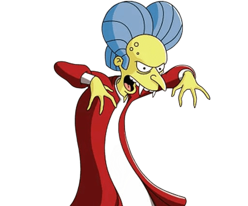

Ático de los vampiros
La bienvenida
Has ascendido más allá de los calderos de las brujas. Aquí arriba, el aire es frío y huele a naftalina y a siglos de negligencia. El Ático de los Vampiros no es solo un lugar de descanso para los no-muertos, es el almacén de los recuerdos que el sol intentó borrar. No abras las cajas que susurren; son solo facturas de luz sin pagar del siglo XVIII.
Reglas de Etiqueta
- No se permite el uso de flash (daña el cutis pálido).
- Los espejos están prohibidos por razones obvias.
- Si ve un murciélago con gafas, es el bibliotecario.
El Diario de Sombras
"Día 438 del exilio en el ático. La conexión Wi-Fi es pésima a través de las paredes de piedra volcánica. El Sr. Burns me ha pedido que baje al sótano a por un poco de 'sangre joven', pero mis articulaciones crujen más que el suelo de madera. He decidido que la inmortalidad está sobrevalorada si no hay una buena serie que ver en el ataúd. Ayer intenté convertir a una mosca, pero terminó siendo una experiencia bastante humillante para ambos."
La eternidad es un concepto que los mortales no comprenden. Se trata de esperar. Esperar a que la luna se posicione, esperar a que el cartero no traiga ajos por error, y sobre todo, esperar a que la moda de las capas vuelva a ser tendencia en las pasarelas de Milán. Mientras tanto, nos conformamos con asustar a los aprendices de bruja que suben a por suministros.
Aviso Legal
Cualquier humano encontrado merodeando después de las 22:00 será cordialmente invitado a ser el plato principal del banquete anual. Traigan su propio aderezo.
¿Dónde esconderse en Pensilvania?
